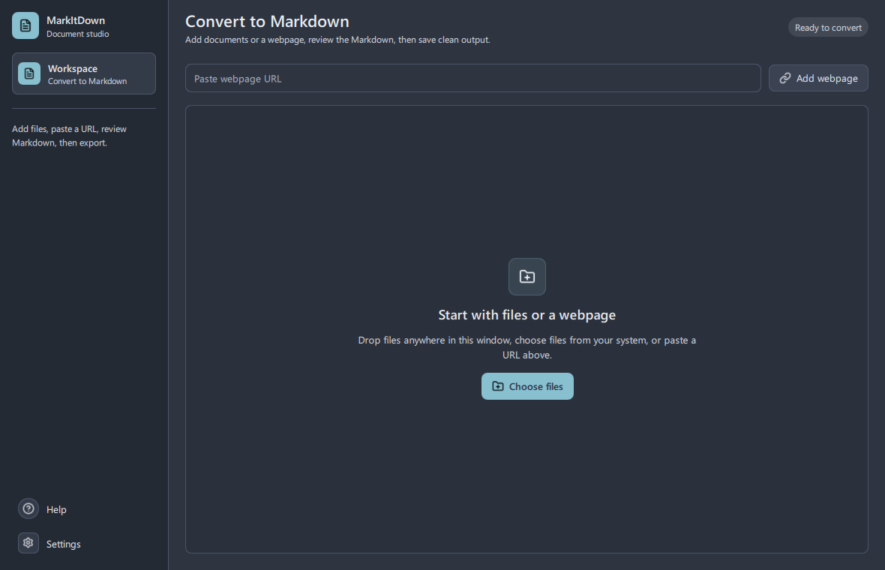
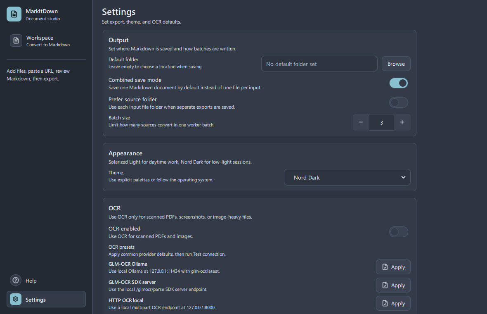
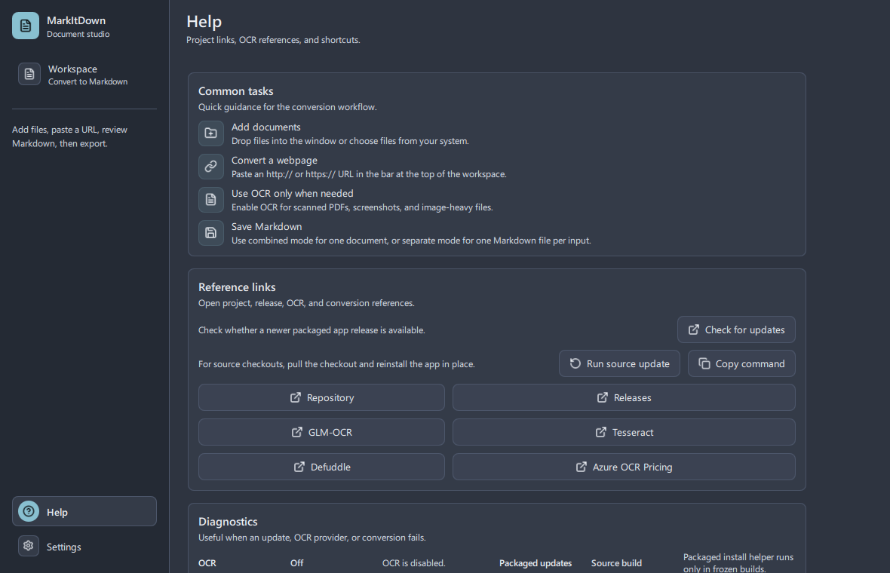

MarkItDown GUI Wrapper
A desktop GUI for MarkItDown, built with PySide6 and official Qt Quick Controls/QML. It focuses on fast multi-file conversion to Markdown with a modern, native-styled desktop interface.

More screenshots:
| Settings | Help and updates |
|---|---|
 |
 |
Features
- Queue-based file workflow with drag and drop.
- Paste website URLs and convert article content to Markdown with the hosted Defuddle API.
- Serial conversion with start, pause/resume, cancel, and progress feedback.
- Results view with per-file selection and Markdown preview.
- Preview modes: rendered Markdown view and raw Markdown view.
- Save modes: export as one combined file or separate files.
- Quick actions: copy Markdown, save output, retry failed conversions, back to queue, start over.
- Optional OCR for scanned PDFs and image files, with selectable
Azure + Tesseract,GLM-OCR, and genericHTTP OCRproviders. - Opt-in fast local conversion for clear digital PDFs using
pdf-inspector; scanned, mixed, uncertain, and encoding-problem PDFs continue through the existing conversion and OCR path. - Settings for output folder, save mode, source-folder saves, OCR, and theme mode (light/dark/system).
- Help view with project links, OCR references, conversion references, and keyboard shortcuts.
Installation
Download prebuilt binaries from Releases, or run from source.
Release assets
- Windows: use
MarkItDown-Windows-Setup-<version>.exefor the normal installer, orMarkItDown-Windows-<version>.zipfor a portable folder. - Linux: use
MarkItDown-Linux-<version>.AppImagefor a single-file app, orMarkItDown-Linux-<version>.zipfor a portable folder. - macOS: use
MarkItDown-macOS-<version>.dmgand drag the app into Applications.
Updating
- Packaged desktop builds are updated from Releases. The in-app update check reads the latest GitHub release, shows a short release-note summary, and prefers the asset for the current operating system. Help shows the selected asset, size, checksum availability, action, and restart behaviour before install.
- Windows and Linux packaged builds can start an in-app install when the preferred asset is a
.zip: the app shows install progress, downloads the archive, verifies SHA256 when release metadata is available, prepares an external helper, closes, replaces the app folder, restarts, and rolls back if replacement fails. The helper records the last update result and rollback backup path in Help -> Diagnostics on the next launch, with a direct action to open the backup folder when it still exists. macOS packaged builds download, verify, and open the.dmgfor manual drag-to-Applications installation. - The Windows installer and Linux AppImage are additional first-install download options; the in-app self-update path intentionally keeps using the portable
.zipasset. - Release builds publish a
markitdown-release-manifest.jsonwith platform, size, and SHA256 metadata for each package. - Source checkouts can update in place from the Help view with
Run source update, or from a terminal:
python -m markitdowngui.utils.source_updaterThe source updater first checks that the checkout has no tracked local changes, then runs git pull --ff-only and reinstalls the app in editable mode with uv when available or pip otherwise. The Help view shows a restart action after it finishes.
Support bundles
The Help view shows a compact readiness summary for OCR, packaged updates, source updates, update checks, and logs. Copy diagnostics includes that readiness summary with home paths and obvious secret values redacted. The view can also export a support bundle for issue reports with a diagnostics report, sanitised settings, and capped recent log tails; raw recent file paths, output paths, and obvious secret values are excluded or redacted.
Settings profiles
The Settings view can export or import a portable JSON profile for OCR, update, conversion, theme, language, and save-mode preferences. Profiles include provider endpoints and environment variable names, but exclude recent files, recent outputs, window state, and default output folders.
Prerequisites
- Python
3.10+ uv(recommended)
Install dependencies:
uv syncAlternative:
pip install -e .[dev]OCR Notes
- OCR is optional and disabled by default.
- Fast PDF conversion is optional and disabled by default. Enable it from the conversion controls for text-based PDFs where speed matters. It is bypassed when preserving PDF images, and it falls back to the established PDF pipeline when the document is scanned, mixed, uncertain, or has encoding issues.
Azure + Tesseractuses Azure Document Intelligence first when configured, then Tesseract as its local fallback.GLM-OCRis available as a separate OCR provider for PDFs and images. It can fall back to another configured provider if selected in Settings.HTTP OCRis a generic integration point for local or self-hosted OCR servers. The app sends a multipartPOSTwith afilepart, optionalmodelfield, and optionalAuthorization: Bearer ...header read from the configured environment variable. JSON responses can usemarkdown,text,result,content, oroutput; plain text responses are used directly.- Preserved PDF images keep using the existing image-preservation pipeline. With
Azure + Tesseract, OCR runs inside that helper. WithGLM-OCRorHTTP OCR, the app preserves images first and appends OCR text from the selected provider. - Settings shows one-click OCR presets for common local stacks, plus provider-specific setup actions for opening docs or copying safe setup snippets. Validate OCR checks the required fields before a batch starts, and Test connection checks live provider connectivity without uploading user documents.
- GLM-OCR offers three modes in Settings:
Official API: easiest zero-setup path, readsZHIPU_API_KEYorGLMOCR_API_KEYfrom the environment.Ollama: easiest local path. The GUI calls Ollama’s native/api/generateendpoint directly, with defaults127.0.0.1:11434andglm-ocr:latest.SDK Server (vLLM / SGLang): stronger self-hosted path. Point the app at an existing/glmocr/parseendpoint. Default:http://127.0.0.1:5002/glmocr/parse.
- The packaged desktop app does not bundle the GLM-OCR self-hosted runtime stack (
torch,transformers,vLLM,SGLang, and related server/runtime pieces stay external). - The project depends on
glmocr==0.1.4for client-side Official API and SDK Server connectivity. Ollama is called directly over HTTP. - Local OCR requires a system
tesseractbinary. Install it from the official Tesseract project. If it is not on yourPATH, set the executable path in Settings. - Azure OCR requires an Azure Document Intelligence endpoint in Settings.
- Azure Document Intelligence pricing includes 500 free pages per month at the time of writing.
- For API-key auth, set
AZURE_OCR_API_KEY. - If
AZURE_OCR_API_KEYis not set, Azure OCR falls back to Azure identity credentials supported byDefaultAzureCredential. - GLM-OCR project reference: zai-org/GLM-OCR
Recommended Local Hosting
For normal local use, the easiest path is Ollama. For stronger self-hosted deployments, use the GLM-OCR SDK Server with vLLM or SGLang.
Ollama
- Install Ollama.
- Pull the model:
ollama pull glm-ocr:latest- Start the service if it is not already running:
ollama serve- In this app, choose
GLM-OCR->Ollama. - Keep the defaults unless you changed them:
- host:
127.0.0.1 - port:
11434 - model:
glm-ocr:latest
- host:
SDK Server
- Create a separate Python environment for GLM-OCR.
- Install
glmocr[selfhosted,server]in that environment. - Start a local
vLLMorSGLangbackend forzai-org/GLM-OCR. - Start the SDK server:
python -m glmocr.server --config config.yaml- In this app, choose
GLM-OCR->SDK Server (vLLM / SGLang)and keephttp://127.0.0.1:5002/glmocr/parse.
Minimal server-side config.yaml:
pipeline:
maas:
enabled: false
ocr_api:
api_host: 127.0.0.1
api_port: 8080The official GLM-OCR docs show the full Ollama, vLLM, and SGLang setup commands:
Website URL Notes
- Website conversion uses the hosted Defuddle API.
- The app sends the pasted
http://orhttps://URL tohttps://defuddle.md/<url>and stores the returned Markdown in the normal results view. - Defuddle responses typically include YAML frontmatter metadata at the top when available.
- According to the Defuddle Terms, unauthenticated requests are limited to
1,000requests per month per IP address as of March 14, 2026. - Because requests are sent directly from the desktop app, that free-tier limit applies to the user’s own network IP.
- Website conversion requires an internet connection and depends on the external Defuddle service being available.
Run the App
uv run python -m markitdowngui.mainKeyboard Shortcuts
Ctrl+O: Open filesCtrl+S: Save outputCtrl+C: Copy outputCtrl+R: Retry failed conversionsCtrl+P: Pause/resumeCtrl+B: Start conversionCtrl+L: Clear queueCtrl+K: Show shortcutsEsc: Cancel conversion
Build a Standalone Executable
uv sync --extra dev --locked
pyinstaller MarkItDown.spec --clean --noconfirmThe default spec builds an onedir app in dist/MarkItDown/. On macOS it also emits dist/MarkItDown.app. Release workflows package Windows and Linux builds into platform-specific .zip artifacts, add a Windows Inno Setup .exe installer, add a Linux .AppImage, and package macOS builds into a drag-to-Applications .dmg from the .app bundle. The macOS bundle is signed with MACOS_CODESIGN_IDENTITY when configured, otherwise it uses ad-hoc signing. Each release also includes markitdown-release-manifest.json for update metadata and checksums. That build intentionally excludes the GLM-OCR self-hosted runtime stack; local hosting stays external to the GUI.
License
MarkItDown GUI is licensed under the MIT License. Commercial use, private use, modification, redistribution, sublicensing, and sale are permitted under that licence, subject to preserving the copyright and licence notice.
Third-party components keep their own licences. The app uses PySide6/Qt under Qt’s LGPL/commercial licensing model; see THIRD_PARTY_NOTICES.md for the runtime and dependency notices that apply to source and packaged builds.
Contributing
- Fork the repository and create a branch.
- Install dev dependencies:
uv pip install -e .[dev]- Make your changes.
- Run tests:
uv sync --extra test --locked
uv run pytest -q- Open a pull request with a clear summary.
Credits
- MarkItDown (MIT License)
- PySide6 (LGPLv3 License)
- Qt Quick Controls (Qt documentation)
- Lucide icons (ISC License)